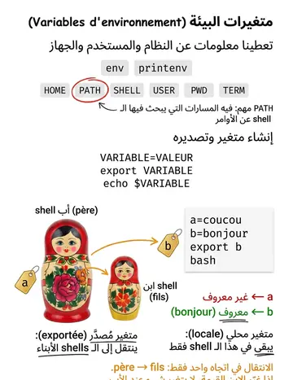

Shells & variables d'environnement (intro)
الشيلات ومتغيرات البيئة (مقدمة)
الشرح بالعربية
من الشيلات: sh/Bourne، bash (Bourne Again)، csh/tcsh، ksh، zsh. عند بدء الشيل تُنفّذ ملفات تهيئة مثل .profile و.bashrc. متغيرات البيئة متغيرات ديناميكية مثل PATH وHOME وPS1 وTERM، تُورّث للعمليات؛ printenv/env تعرضها وexport تصدّرها.
Illustrations de la leçon
1 planche · cliquez pour agrandir
Contenu de la leçon
Le cours en français, avec les termes techniques et les exemples.
Il existe plusieurs Shells UNIX :
C-Shell (csh ou tcsh)
Bourne Shell (sh ou bash)
Korn Shell (ksh), ....
L’interprétation des commandes simples est semblable pour tous. Par contre, l’utilisation pour écrire des scripts diffère beaucoup (définition des variables, structures de contrôle, etc).
INTRODUCTION AU BASH : LES DIFFÉRENTS
SHELLS ET LEUR INITIALISATION
L’initialisation du Shell se fait au démarrage du système : Les Shell exécutent des fichiers de configuration, qui peuvent contenir des commandes quelconques et sont généralement utilisés pour définir des variables
d’environnement et des alias :
csh exécute le fichier ~/.cshrc (le "rc" signifie run command)
tcsh exécute ~/.cshrc
sh exécute ~/.profile
bash exécute ~/.bash_profile ou à défaut ~/.profile
Ces fichiers d’initialisation sont "invisibles”.
INTRODUCTION AU BASH : LES DIFFÉRENTS
SHELLS ET LEUR INITIALISATION
Elles sont instanciées lorsqu’un Shell est exécuté par le système. Ce sont des variables dynamiques utilisées par les différents processus d’un système d’exploitation.
Elles donnent des informations sur le système, la machine et l’utilisateur.
La commande env permet d’afficher à l’écran toutes les variables d’environnement pour le Shell.
Pour définir ses propres variables d’environnement, on utilise la commande
export :
VARIABLE=VALEUR : donne une valeur à une variable.
export VARIABLE : définit VARIABLE comme une variable d’environnement.
echo $VARIABLE : affiche la valeur de la variable.